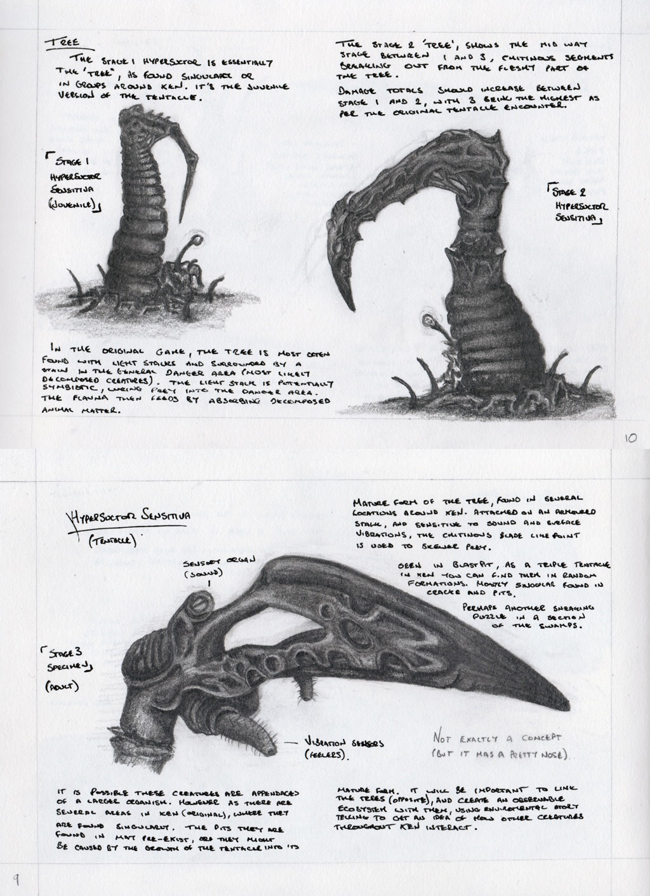

-
Uh, no? My image is just a(n admittedly poor) self-portrait. I haven’t used or talked much about Sonic stuff here in a long time.
-
Again, the wait is not the issue. It’s just, the first release date for this thing was summer of last year, right? The year before? When they keep pushing back the “right around the corner” release date, how am I to expect there isn’t actually another 2 years of work to be done? There are right and wrong ways to handle a long-term project, and I think I’m allowed to think a constant reassurance that ‘it’ll be out soon’ is more annoying to see every few months than just not saying anything until you know you can actually hit your release date.
first release date was summer 2017, then it was december 2017, now they’ve the smart thing and have no release date, trust me, every dev on the team is busting their ass each day working on it, proof from their discord server
1 Like
I posted it right there. They release the beta chapters on August 1st, and say that “weeks, not months” later, the rest of Xen will come. That means Fall 2019 at the latest. None of these are concrete dates, but they’re release windows.
And I have no doubt that that’s true! I feel like I’m being misinterpreted on purpose here. It’s just a matter of presentation. Like I said, I can wait. Game’s done when game’s done, I have no problem there. Just, stop saying it’ll be out earlier than it is! They have a lot more control over that than speeding up actual development. I honestly do not think this is much to ask.
If there’s reasoning as to why it would be a lot to ask, I’m all ears. But I think frustration with this is justified. I’d rather be surprised by the release of a game I forgot was coming out than annoyed by one I’m following that keeps pulling the rug out from under me.
3 Likes
Not all of interloper will launch at once
3 Likes
1 Like
Joel Nielsen brought this idea up as a joke in the discord, I took it seriously.
It features a new remix made by Joel named “Internal Shades of Grey”
https://www.youtube.com/watch?v=pKNA3AMxziU&feature=youtu.be
2 Likes
2 Likes
Now it make sense why CC added Vortigaunt eye “glow” back in 2018. Player will be able to tell which ones in Interlooper are mind controlled.
I am also curious if there will be areas, where can player go through with or without triggering alarm.
1 Like
Interloper came out and it’s sexy, (so far)
2 Likes
Alright, so here’s my summary with some thoughts and questions.
I love the first few maps of Interloper. I like that you don’t fight enemies all the time but have some really clever puzzles to solve and some platforming to master. It’s also a very atmospheric chapter starting with a visit to a Vortigaunt village that shows the mind controll of the alien Controllers and a very fun chase sequence that is reminiscent of the chase squences in Gonarch’s lair but a lot longer.
One thing I don’t know yet: after we finish the chase sequence we enter some sort of sewers and arrive in caves. While there are some big machines in the rest of the maps the walls look like made of stone until the end of this beta. So are we in the actual huge tower yet? The tower itself looks not natural at all, it’s a sort of metallic construct, yet the environments so far look like caves which I don’t mind at all, but it makes me question if we are in the actual tower yet or just below the tower? Will the environment change for the rest of Interloper as we fight our way up or do they stay the same?
As far as gameplay is concerned I love this chapter though. I love how complex these levels are. While previous Xen chapters did this as well I think it’s most apparent here: You enter a giant room with all sort of machinery on different layers of verticality and you make your way around by solving puzzles and looking for new paths to go. Especially the first tower/ cave map is a great example of this (and to a lower extent the Vortigaunt village as well). What’s funny is that the Xen chapters of Black Mesa make the Earth chapters that are mostly faithful recreations of the original Half Life 1 maps look slightly worse or minor in comparison. It really shows how good the developers are in terms of level design. Big props to all of you.
I hope that there’s still a lot of Interloper left to explore as I can’t get enough of it and want to discover even more great maps with new puzzles to solve. Maybe we’ll see even more mechanics in the future Interloper maps. However I hope to also see more action. While I love the focus on atmosphere and puzzle solving I hope we’ll get some really hard fighting scenarios in these next set of maps. We’re in the late game here and it’s just appropriate to have some really harsh encounters that test your skills.
I also wonder if we’re going to see the other variation of the Alien soldiers that were teased in some test videos: the “generals” which are bigger and have more amor and the “naked” soldiers that solely depend on melee combat. I bet we’ll encounter them in the next maps.
Also doesn’t Interloper end with an “ascension” section? I wonder if this is something similiar to the start of the game or the section in the Citadel in Half Life 2 where you’re in some sort of vehicle that transports you to the top while you take in all the scenery. An automated scenario.
Finally I am looking forward to the Nihilanth chapter. I would love to see it being pretty big as well and not “just” the boss fight. I would really like one or two more maps taking place at the top of the spire where the environment yet again looks different from the main section of the tower. A section with some more platforming or puzzles to solve and maybe one last really hard fighting section before facing the boss. I also wonder how many phases Nihilanth will have, how complex and long this boss fight will be. I’d love to see the original phase with Nihilanth teleporting the player to small rooms but also phases that are more like a traditional boss fight with Nihilanth having a variety of attacks that you need to dodge. One thing that would be really awesome is Nihilanth teleporting Gordon Freeman and himself on top of the tower for his last phase. You’re on the “roof” so to speak with the sky above your head and you have a great view on Xen from up there. I think that would be epic.
I’d love to see the devs actally surprising us by making Nihilanth a bigger chapter than we thought that not only has a long, complex and difficult boss fight against Nihilanth but also a bit of gameplay at the top part of the tower that precedes the boss fight.
Anyways, what a great update.
1 Like
I think it would be add a nice bit of detail to have the Vortigaunts running the machinery to turn and “yell” at the player as they do things like yank out cords and damage the equipment. Given the fact that causing enough chaos causes the controllers to come around and mind-control them (or worse), it would be a realistic reaction, in my opinion. Also, this level brought to mind a couple of achievements:
Modern Times: Cause as much destruction in the alien “factory” as possible.
More Than My Job’s Worth: Don’t let a Controller mind-control any Vortigaunts.
2 Likes
Suggestion:
If the player kills the Vortigaunts in the village, or kills a certain number of them (perhaps mind-controlled ones or friendly fire in the middle of combat should count fractionally compared to cold-blooded execution), the slave-vorts should be hostile from then on and will not unplug the alarm in the control room.
2 Likes
We originally had it set up in Interloper so that Vorts would go hostile if you started killing them, but it just didn’t work well for a variety of reasons. We found that ultimately everything just worked so much better and clearer if the Vorts got SCARED when you killed them, but couldn’t actually fight back. We haven’t set it up everywhere yet, but the eventual goal is that if you’re slaughtering Vorts, they will just run and hide.
We want the implication to be that their shackles “block” or “allow” their electrical powers. Meaning the Controllers basically have control over that too (which makes sense when you think about it). Hence why they won’t fight back in Interloper, but they do fight back on Earth, because their powers are “enabled” there.
2 Likes
A Lead Dev, Chris, Showed off some old concept art showing how the Hacker Trees evolve into the Xen Tentacles

4 Likes
Ooh, looks nice. I don’t suppose that could make it onto a whiteboard, perhaps in Lambda Core?
With what we’ve seen so far with Interloper, much like in HL1, a-lot of the it seems to focus on the process of how the A-Grunts are manufactured, chosen, stored, disposed of, & even where their weaponry is stationed. I do wonder if the rest will focus on how the Gargantuas are made, unlike HL1 they’re not explored like the A-Grunts in terms of whether or not they are made or are naturally born. Either way I’m sure it’ll be a sight to see, looking forward to the rest! the dev branch was updated an hr ago 
The Devs have said that the gargs are natural animals so I dont expect that, though We will see the conveyor belts and gruntpods in the next map!
Sweet! I hope we see the A-Grunt Elites as well, those guys look badass!